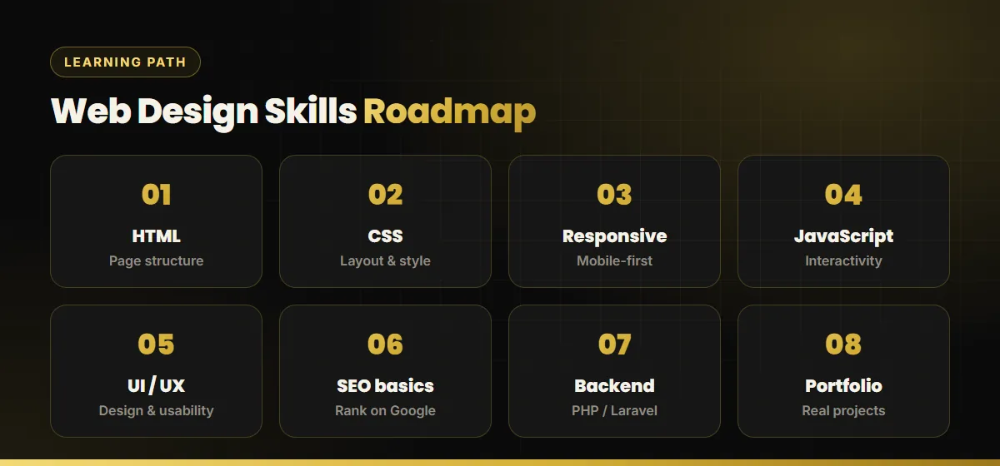

Key takeaways
- A web design course is a great investment if you want web design as a career or freelance skill.
- If you just need a website for your business, hiring a designer is usually faster and cheaper overall.
- Choose courses that are project-based and end with a real portfolio, not just a certificate.
- Modern web designers also need SEO, speed and mobile-first skills, not only visual design.
Web design is one of the most popular skills to learn in Sri Lanka. You can work from home, freelance for local and international clients, or join a software or digital marketing company. But if your real goal is a website for your own business, a course might not be the best use of your time. This guide covers both paths.
Who should take a web design course?
- School leavers and students looking for a practical, in-demand career skill.
- Graphic designers who want to design for the web as well as print.
- Freelancers who want to offer websites to local and overseas clients.
- Digital marketers who want to build landing pages and understand how websites affect SEO. If SEO interests you most, see our guide to SEO courses in Sri Lanka.
Types of web design courses in Sri Lanka
| Option | Good for | Things to check |
|---|---|---|
| University degrees and HNDs | A deep foundation in computing and a formal qualification | Takes years. Check how much is practical, hands-on web work. |
| Private institute certificate courses | Structured classes over a few months, often in Sinhala or English | Look at student projects and how up to date the syllabus is. |
| Online platforms and free resources | Learning at your own pace, at low or no cost | Needs self-discipline. Build real projects as you go. |
| Internships and on-the-job learning | Real client work and mentorship | Usually needs some basic skills first. |
Free resources such as MDN Web Docs and freeCodeCamp are excellent for the fundamentals, and many learners combine them with a local course for structure and feedback.
What a good course should teach
Websites today are judged on speed, mobile experience and search visibility, not just looks. Use this roadmap to check any course syllabus:

- HTML: semantic page structure, headings and forms.
- CSS: layout with Flexbox and Grid, typography and colour.
- Responsive, mobile-first design for phones, tablets and desktops.
- JavaScript: interactivity, menus, sliders and form handling.
- UI/UX design: wireframes, user journeys and design tools such as Figma.
- SEO basics: titles, headings, speed and structured data. See our SEO-friendly website design checklist.
- Backend basics: PHP or Laravel, databases and admin dashboards for dynamic sites.
- A portfolio of real projects that you can show to clients and employers.
How to choose the right course
- See student work. Ask for live websites built by past students.
- Check the syllabus date. It should cover responsive design and modern CSS, not just old table layouts.
- Prefer project-based learning. You learn far more by building than by memorising.
- Look for SEO and performance modules. They make your sites more valuable to clients.
- Ask about support. Can you get help and feedback on your code?
Learn it yourself or hire a designer?
If you are a business owner, be honest about your goal. Learning web design properly takes months of practice. Building a site that is fast, secure, mobile-friendly and ready for Google takes even longer to get right.
| Learn and build it yourself | Hire a web designer | |
|---|---|---|
| Time | Months of learning plus build time | Usually one to two weeks for a 5-page site |
| Cost | Course fees plus your time | From LKR 10,000 for a static website |
| Quality and SEO | Depends on your experience | Professional design with SEO built in |
| Best if | You want web design as a career skill | You need a website that brings in customers soon |
For most business owners, hiring is the faster and cheaper route. Compare prices in our website cost in Sri Lanka guide and browse our web design portfolio to see what a professional build looks like.
Web design career paths
Once you have the skills and a portfolio, common paths include front-end developer, UI/UX designer, WordPress or Laravel developer, freelance web designer and web designer at a digital marketing agency. Adding SEO skills makes you much more valuable, because clients want websites that rank. If that interests you, read how to become an SEO specialist and what SEO is.
Need a website, not a course?
Get a professional, SEO-ready website from LKR 10,000, usually live within one to two weeks.

Buddhika S Weerasekara is an SEO consultant and web designer in Sri Lanka who builds fast, search-ready websites for local and international businesses. More about Buddhika.